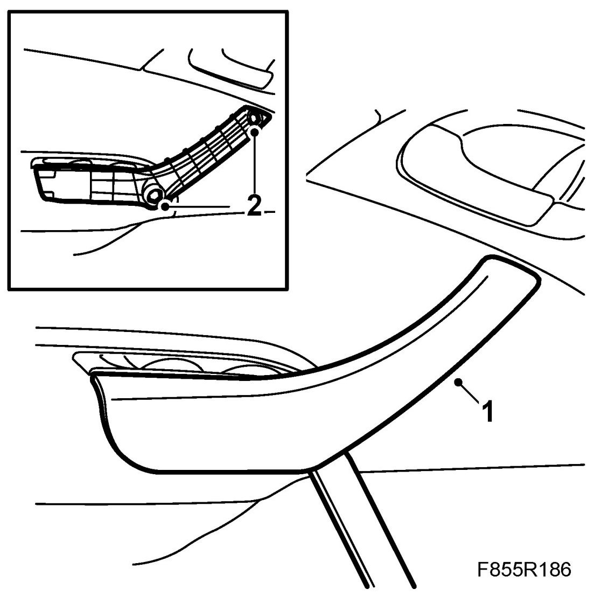
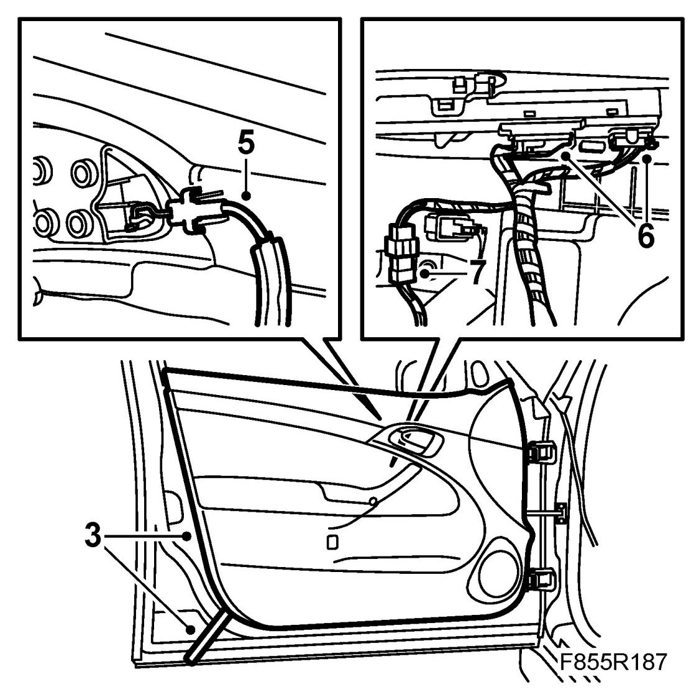
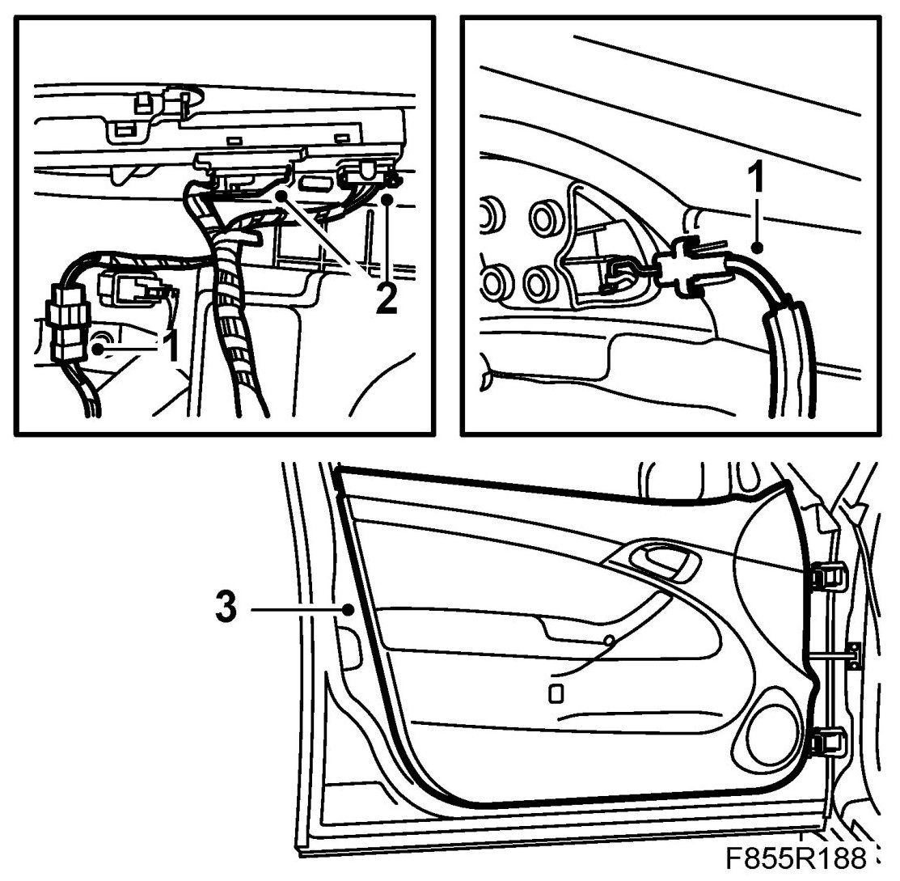
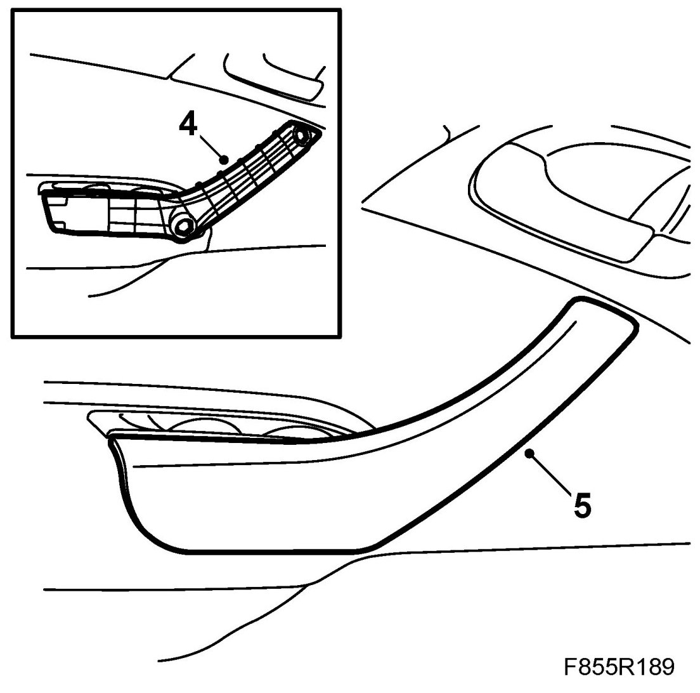

Door Trim, Front
Door Trim, Front
To remove
1. Remove the inner door handle cover. Use 82 93 474 Removal tool under the handle and lift upwards.

2. Remove the screws from the handle.
3. Undo the door trim clips by inserting 82 93 474 Removal tool between the trim and door panel and gently prising out the trim. Move the tool along the trim as the clips come undone.

4. Lift up the door trim so it comes loose from the top edge.
5. Remove the door handle cable.
IMPORTANT: Take care when releasing the locking mechanism on the connector so as not to damage the connector. Pull the halves straight apart to avoid bending the pins. For further information regarding connectors, refer to Connectors, handling and inspection.
6. Remove the connector from the door panel and the window lift.
7. Unplug the connector from the wiring harness to the door trim.
To fit
NOTE: Make sure the door trim clips are positioned correctly and that the clips are intact before fitting the door trim.
IMPORTANT: Take care when plugging in the connector so as not to damage or press out the pins/sleeves in the connector. For further information regarding connectors, refer to Connectors, handling and inspection.
1. Cars with speaker: Cut out a hole in the door trim foil so that the speaker fits.
Fit the connector to the door panel wiring harness and fit the cable.

2. Fit the connector to the door trim and the window lift.
3. Lower the upper section of the door trim between the window and the door panel. Make sure the clips are directed towards their holes and press on the door trim.
4. Fit the screws for the handle.

5. Fit the cover on the inner handle.
6. Cars with pinch protection: Carry out pinch protection programming.